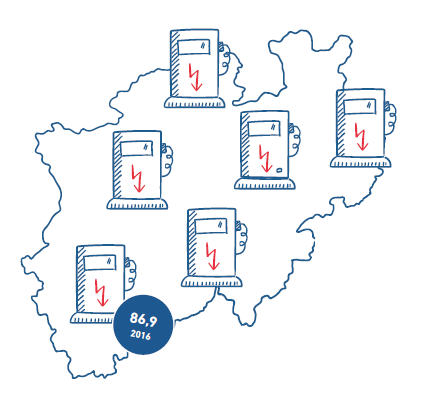
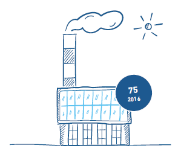
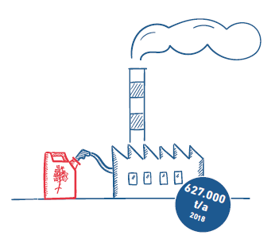
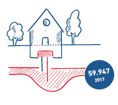
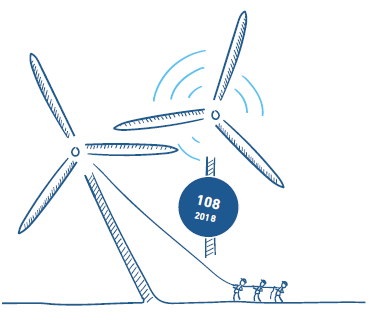

Nachhaltige Mobilität Elektro-Ladepunkte pro 1.000 km^2
Nur mit einer flächendeckenden Tank- und
Ladeinfrastruktur können fossilfreie Autos
konventionelle Benziner und Diesel ersetzen.
Nordrhein-Westfalen kann unter den
Flächenstaaten bereits die höchste Dichte
an Elektro-Ladepunkten aufweisen.Solarthermie Anzahl von Solarthermie-
Anlagen
zur Erzeugung von
Prozesswärme
Als Deutschlands größter Industriestandort
verbraucht Nordrhein-
Westfalen viel Wärme für industrielle
Anwendungen. Der Ausbau
emissionsfreier Alternativen zu Erdgas,
Erdöl und Kohle steht noch
relativ am Anfang. Mit 75 solaren
Prozesswärme-Anlagen ist das
Bundesland deutschlandweit dennoch
führend.Biodiesel Herstellungskapazität
Rapsöl ist nicht nur reich an Omega-
3-Fettsäuren, sondern auch an
Energie.
In Deutschland wird der
meiste Biokraftstoff deshalb aus der
Rapspflanze gewonnen. NRWs
Rafinerien haben die größte Herstellungskapazität
für Biodiesel in
Deutschland.Erdwärme Anzahl
Erdwärmepumpen
Energie aus der Erde hat in NRW
Tradition, deswegen ist es auch
nicht verwunderlich, dass im Bundesland
in absoluten Zahlen 2017
die meisten Erdwärmepumpen
installiert waren.Windenergie Anzahl neu installierter Windenergieanlagen
Auch im Westen ist Windstrom eine
wichtige Energiequelle. Die großen
Potenziale von Nordrhein-Westfalen
werden allmählich erschlossen,
so belegt es 2018 den zweiten Platz
beim Zubau neuer Windenergieanlagen.